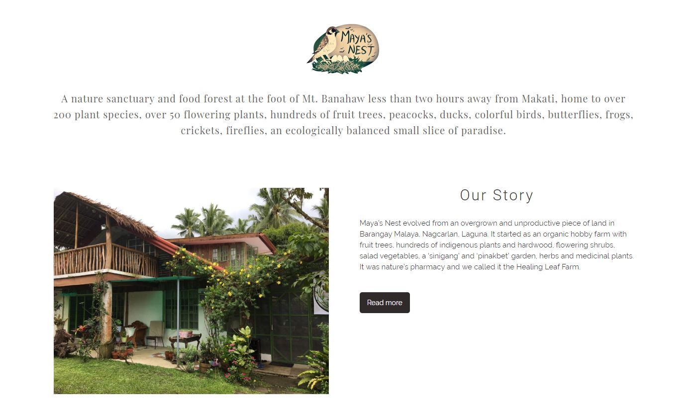

Career Summary
I have worked with global and local organizations supporting executive teams and C-level management in the implementation of mission-critical tasks.
With extensive experience working alongside organizations from different sectors, I am able to manage projects at scale and identify key focus areas.
I currently work as an independent consultant for businesses and non-profits.

Maya's Nest
Digital Transformation: Website Development | Content Management
Digital Transformation: Website Development | Content Management
Maya's Nest is a "Farm Bed & Breakfast and Nature Sanctuary" located in Nagcarlan, Laguna. The work covered developing a new website through the client's existing CMS and highlighting the three main attractions of the property: The Bed and Breakfast, The Events Place, and The Nature Sanctuary.
Scope of work: Website Development | Social Media Management
Key Deliverables: Non-peak Season Marketing Plan | Facebook Posts | Revamped Website with Automated Booking System
Project Duration: 7 weeks
Maintenance and Support: Ongoing
Platform: Wordpress | Facebook


Non-profit Support
Supported various non-profit organizations in the implementations of projects and initiatives across multiple sectors.
Focus Sector: Social Entrepreneurship | Impact Investing | Women Empowerment
Scope of Support: Project Management | Executive Support | Content Management | Event Management
Deliverables: Partner Presentations, Digital Content, Draft Press Releases, Grant Proposals